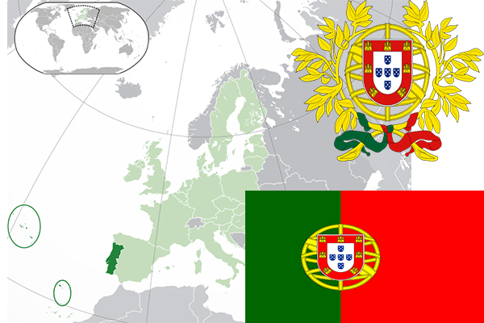

To`liq nomi: Portugaliya Respublikasi
Region: Yevropaning janubiy -gʻarbi
Qonunchilik shakli: Respublika
Mustaqillik kuni: 5-oktabr 1143-yil
Poytaxt: Lissabon
Maydoni: 92 151 км²
Chegaradosh davlatlari: Ispaniya
Aholisi: 10,379,573 (2016-yil)
Aholi zichligi: 115/km2
Aholining o`rtacha yoshi: 80,72 yil
Rasmiy tili: Portugal tili
Dini: Xristian
Pul birligi: Yevro
Telefon prefiksi: +351
Internet domen: .pt
Xalqaro tashkilotlarga a`zoligi: NATO (1949), BMT (1955), YeI (1986)
Dengiz va okeanlarga chiqishi: Atlantika okeani
YIM: Butun: $235.6 mlrd.(2017-yil) Jon boshiga: $22,663
Yirik shaharlari: Lissabon, Portu, Braga